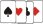

<ul>
<li>
<!-- naechste 4-stellige mn erwuerfeln:
vorgaenger mn ziffern anschauen:
1. Ziffer > 6 ? 1 Wurf: 2 Wuerfe
naechste Ziffer kleiner ? 1 Wurf : 2 Wuerfe
-->
<a href="./mn.php?mn=6157&a=b6589fc6ab0dc82cf12099d1c2d40ab994e8410c">Omnipage</a>
</li>
<i> Parser-Logik</i>
<li>
<a href="./mn.php?mn=6998&a=Token">Token</a>
</li>
<li>
<a href="./mn.php?mn=3655&1=SubToken&n=Token&a=1">SubToken</a>
</li>
<li>
<a href="./mn.php?mn=7545&re=1&re1=Token&1n=1&1n1=SubToken&a=TokenSubToken">TST</a>
</li>
<li>
<a href="./mn.php?mn=3239&a=Topic&b=Token&c=TopicToken&i=2">TopicToken</a>
</li>
<li>
<a href="./mn.php?mn=6997&a=Topic">Topic</a>
</li>
<li>
Topic <a href="./mn.php?mn=3655&1=TopicForderung&n=Topic&a=1">Min-Gewicht</a>
</li>
<li>
<a href="./mn.php?mn=6998&a=Thema">Thema</a>
</li>
<li>
Thema <a href="./mn.php?mn=7545&re=1&re1=Thema&nn=1&nn1=TopicToken&a=TopicTokenThema">verkn&uuml;pft</a>
</li>
<li>
<a href="./mn.php?mn=8418&a=d">Salt - HowTo</a>
</li>
</ul>
<?php
/*** Menue-Links:
 *  mn         a               b                       c                d                   1                         n
 * -----+----------------+----------------+---------------------+----------------+-------------------------+-----------------
 * 5413   1. Titel         2. Titel
 * 6649   reine Entitaet   Bleistift weg
 * 8417   dummy
 * 8546   reine Entitaet   reine Entitaet   Verbindungsentitaet   Titel
 * 3655                                                                            zu speichernde Entitaet   Bezugsentitaet
 * 
 ***/

/*** intern gesetzte Links:
 *  mn         a                       ID             
 * -----+-------------------------+-------------------
 * 1142   zu loeschende Entitaet    Primaerschluessel
 * 3653   zu aendernde Entitaet
 * 4454   zu speichernde Entitaet
 * 7774   zu aendernde Entitaet
 * 
 ***/
?>
